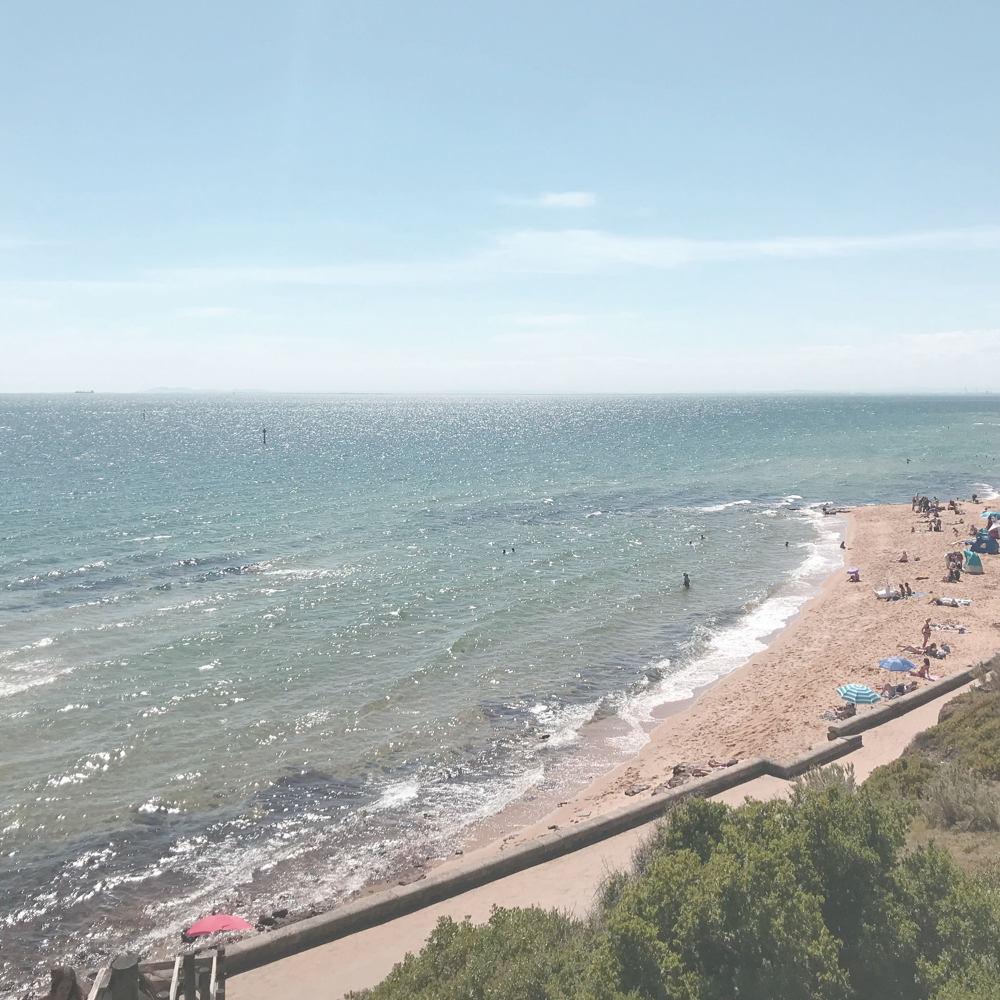

She was the first Ghost to arrive, but it wasn't long until there were dozens of them, scanning every pile of debris that remained of Tower North. They came in search of the one who guided their journeys, the one who once spoke for the Traveler.
Her journey had spanned centuries—on Earth, the Moon, and Venus—but she never unearthed a single soul she felt worthy of the Light. "I used to think it was me; perhaps I was too picky, but… he assured me, humanity was vast. The gift of the Light must be deserved, and it was better to be thorough than to end up with someone too weak to bear the burden, or worse, misuse it. He, at least, made me feel… useful. I put my search on hold and served him as a cartographer. You?"
Anwar paused. Drifted a few feet toward the luminous Living Traveler. "Dejana, can you feel it?"
Dejana followed Anwar's gaze up to the Traveler. "Feel what?"
The Speaker's warnings were clear: Always mind the Light. If you feel it fraying, you've strayed too far. There are places even the Traveler's Light cannot reach.
Now, here I am, lost in the shadowy pastiche known as the Reef. And not a single tether of Light touches me. But that… that is what my Guardian wanted.
His name is Cyrell; and Cyrell called me Strain. I found him on the far edges of Mercury, in a valley that the Vex transformation had never reached. He seemed resilient, unwavering, old, and wise. I'd searched so long for my better half that I didn't hesitate. If I had considered but one moment more, I might have sensed how tired and burdened and tangled his soul truly was, and I would have left him in peace. And I would not be a murderer of my kin.
Cyrell told me we came to the Reef in search of Awoken. He had heard stories of how this far-flung offshoot of Humanity had returned to Sol with unparalleled knowledge. He believed they had the answer to a question he refused to share. I know now, however, that he really came here to spare me.
He confessed he could not bear another battle nor fight in the name of something no one could possibly understand. Though he could not remember his past, he knew deep down that he had already fought his last war.
He couldn't kill me. I was his friend. He doesn't kill friends. He wouldn't kill himself, either; that was cowardly, weak. And if the Ghosts' sole purpose was to raise the dead to kill in the name of unexplainable forces, he could no longer let that happen. He would end the cycle. He would spare his brothers- and sisters-in-arms. He would let the dead rest.
Years later, I saw Cyrell again, clad in wretched-looking armor, dragging a chain of dead Ghosts in the name of peace. Still searching for an Awoken who could answer the one question that has haunted him since his rebirth.
If you are a Ghost who has not yet found your Chosen, let this be a warning: Cyrell, the Ghost Hunter, will end your search for you. If you are Awoken and perchance have the answer he seeks, please, do not keep your secrets from him.
Your life depends on it.